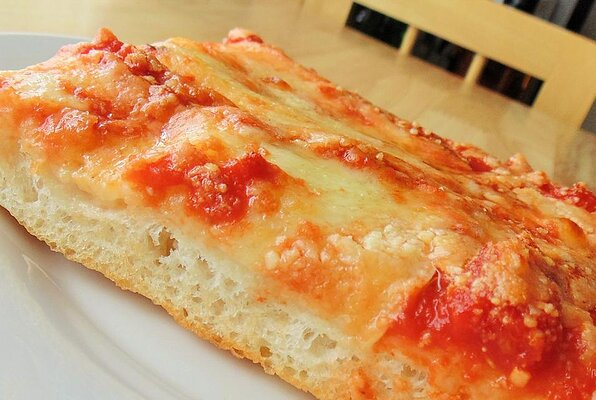

Pizza

Description
Now found exclusively at one well-known pizza garden in Gravesend, Brooklyn, this style of pizza was once found in neighborhood bakeries. This pizza is deceivingly light, crisp, and slightly spicy. Enjoy with a can of soda.
Ingredients
- 1 ¼ cups warm water
- 1 teaspoon active dry yeast
- 3 cups bread flour
Method
- Combine water and yeast in a small bowl. Let stand until yeast softens and begins to form a creamy foam, about 5 minutes.
- Combine flour and salt together in the bowl of a stand mixer fitted with a dough hook attachment. Pour in yeast mixture. Knead dough until smooth, about 7 minutes.
- Grease a large bowl lightly with olive oil. Form dough into a tight ball and lightly grease the top. Place in the bowl; cover loosely with plastic wrap. Let rise until doubled in volume, about 30 minutes.
- Mix crushed tomatoes and pizza sauce together in a bowl to make sauce.